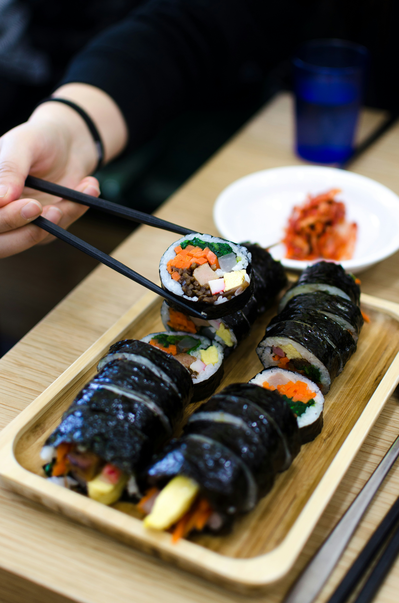

Back to Home
Kimbap

Description
Kimbap is a popular Korean dish made of rice and various fillings rolled in seaweed.
Ingredients
- Cooked white rice
- Seaweed sheets (nori)
- Fillings (e.g., cooked beef, pickled radish, spinach , carrots, eggs)
- Sesame oil
- Salt
Instructions
- Season the cooked rice with sesame oil and salt. Mix well and let it cool to room temperature.
- Prepare the fillings by cooking the beef, sautéing the vegetables, and making a thin omelet with the eggs. Cut the omelet into strips.
- Place a seaweed sheet on a bamboo sushi mat. Spread a thin layer of the seasoned rice over the seaweed, leaving about an inch at the top edge.
- Arrange the fillings in a line across the middle of the rice.
- Using the bamboo mat, carefully roll the seaweed and rice over the fillings, applying gentle pressure to create a tight roll. Continue rolling until you reach the end of the seaweed sheet.
- Use a sharp knife to slice the kimbap into bite-sized pieces. Serve with soy sauce or a dipping sauce of your choice.